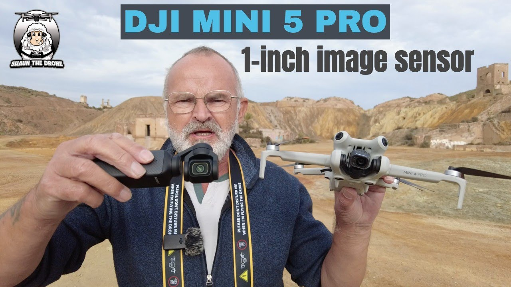

My Future Thoughts

There has been a lot of talk about the next Mini Pro series drone as customers wait to see what DJI reveals.
The Mini 4 Pro had better range and 360-degree obstacle avoidance, which were reserved for the bigger drones.
Now, for the Mini 5 Pro, people are speculating the introduction of a 1-inch sensor for the camera, which would be a big deal for the Mini series. This, however, in my opinion is unlikely as they don't even have this feature on their bigger drones like the Mavic and Air series.
DJI already has 1-inch sensor in their handheld recording device, which produces a really nice image, but it may be too big and heavy for the Mini series.
The main idea of the mini series is to be lighter than 249g, so that it can be legal in most countries without needing license.
DJI may give us even better video transmission and range which the inclusion of cellular module for the Mini 5 Pro built in to enhance the flight experience.
I will most likely stick with the mini pro series since I travel back home frequently, so taking this through airports is easier.
Email me at: chowdh52@uwindsor.ca
Back to Top of Page
Adib Md Alim Chowdhury
chowdh52@uwindsor.ca